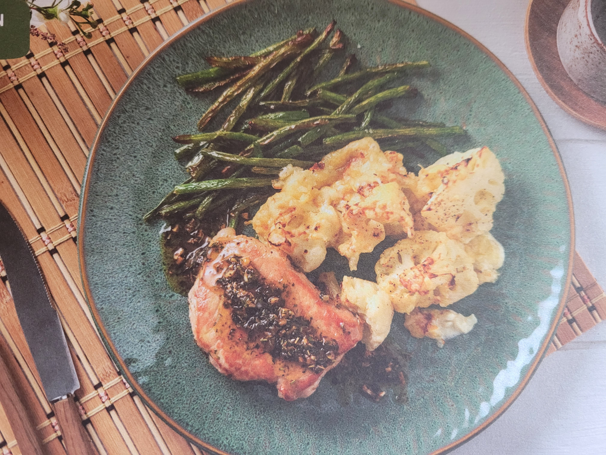

Garlic and Herb Pork Steak

Description
Garlic and herb butter coated pork steak, served with creamy cauliflower cheese and green beans. This recipe is keto-friendly.
Ingredients
- garlic cloves
- green beans
- grated cheese
- cauliflower
- creme fraiche
- pork steak
- butter
- dried herbs
- oil for cooking
Steps
- Preheat oven to 220C. Boil kettle. Peel and grate garlic. Trim breans. Chop cauliflower into florets.
- Boil cauliflower until tender, 5-6 mins. Drain and place in ovenproof dish.
- Spoon creme fraiche over cauliflower and stir. Season with salt and pepper and add drizzle of oil. Top with cheese. Bake on top shelf until golden, 10-12 mins.
- Place green beans on baking tray, add salt, pepper and oil. Roast on middle shelf, 8-10 mins.
- Heat large frying pan on medium-high with oil. Season pork with salt and pepper. Once hot, add pork steaks to pan. Cook until browned, 3-4 mins on each side.
- Reduce heat to medium, then fry steaks for additional 8 mins, turning regularly.
- When pork has 1-2 mins left, add garlic, butter and herbs. Stir to melt the butter and coat the pork.
- Once cooked, transfer to plate. Cover and rest for 1-2 mins. Keep sauce in pan for later.
- Once pork has rested, serve with cauliflower cheese and green beans. Drizzle steaks with sauce from pan.
- Enjoy!